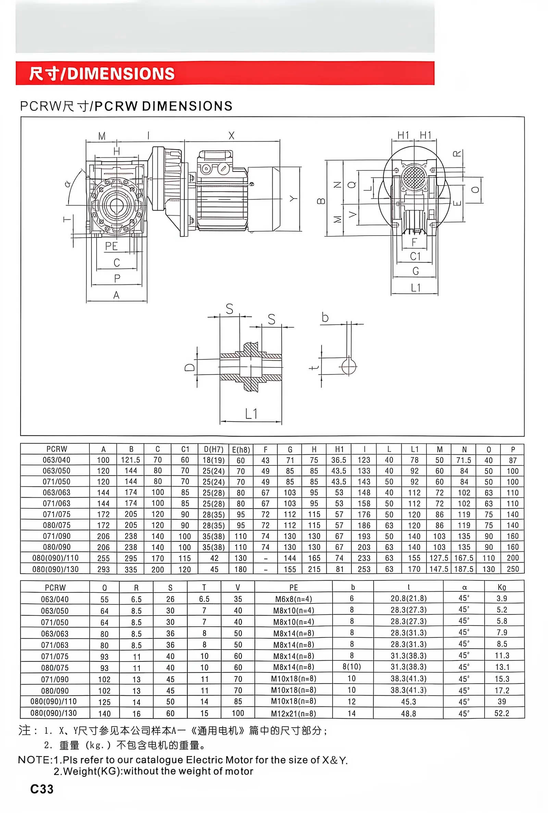

MULTI-STAGE RIGHT-ANGLE DRIVE
NMRV Worm Gearbox + PC Pre-stage + Three-Phase Motor
This SMK assembly connects an industrial three-phase motor to a PC helical pre-stage reducer and an NMRV worm gearbox. The two reduction stages provide a broader total ratio range, lower output speed and compact right-angle power transmission.
- PC helical pre-stage for additional speed reduction
- Compact right-angle NMRV worm gearbox
- Industrial three-phase motor input
- Multiple PCRW model combinations
- Selection and mounting support from SMK
Typical Applications
NMRV + PC gear motors are suitable for conveyors, packaging equipment, mixers, food-processing machinery, agricultural equipment and other systems that need low output speed, higher total reduction and a compact right-angle arrangement.
How to Select the Correct Combination
Send the required output speed, load torque, motor power, voltage, frequency, duty cycle, mounting position, shaft dimensions and ambient conditions. SMK will check the PC pre-stage, NMRV gearbox size and three-phase motor as one matched drive.
PCRW Outline Dimensions
PC pre-stage + NMRV worm gearbox combinations; dimensions are in millimetres.

| PCRW | A | B | C | C1 | D (H7) | E (h8) | F | G | H | H1 | I | L | L1 | M | N | O | P |
|---|---|---|---|---|---|---|---|---|---|---|---|---|---|---|---|---|---|
| 063/040 | 100 | 121.5 | 70 | 60 | 18 (19) | 60 | 43 | 71 | 75 | 36.5 | 123 | 40 | 78 | 50 | 71.5 | 40 | 87 |
| 063/050 | 120 | 144 | 80 | 70 | 25 (24) | 70 | 49 | 85 | 85 | 43.5 | 133 | 40 | 92 | 60 | 84 | 50 | 100 |
| 071/050 | 120 | 144 | 80 | 70 | 25 (24) | 70 | 49 | 85 | 85 | 43.5 | 143 | 50 | 92 | 60 | 84 | 50 | 100 |
| 063/063 | 144 | 174 | 100 | 85 | 25 (28) | 80 | 67 | 103 | 95 | 53 | 148 | 40 | 112 | 72 | 102 | 63 | 110 |
| 071/063 | 144 | 174 | 100 | 85 | 25 (28) | 80 | 67 | 103 | 95 | 53 | 158 | 50 | 112 | 72 | 102 | 63 | 110 |
| 071/075 | 172 | 205 | 120 | 90 | 28 (35) | 95 | 72 | 112 | 115 | 57 | 176 | 50 | 120 | 86 | 119 | 75 | 140 |
| 080/075 | 172 | 205 | 120 | 90 | 28 (35) | 95 | 72 | 112 | 115 | 57 | 186 | 63 | 120 | 86 | 119 | 75 | 140 |
| 071/090 | 206 | 238 | 140 | 100 | 35 (38) | 110 | 74 | 130 | 130 | 67 | 193 | 50 | 140 | 103 | 135 | 90 | 160 |
| 080/090 | 206 | 238 | 140 | 100 | 35 (38) | 110 | 74 | 130 | 130 | 67 | 203 | 63 | 140 | 103 | 135 | 90 | 160 |
| 080 (090)/110 | 255 | 295 | 170 | 115 | 42 | 130 | — | 144 | 165 | 74 | 233 | 63 | 155 | 127.5 | 167.5 | 110 | 200 |
| 080 (090)/130 | 293 | 335 | 200 | 120 | 45 | 180 | — | 155 | 215 | 81 | 253 | 63 | 170 | 147.5 | 187.5 | 130 | 250 |
| PCRW | O | R | S | T | V | PE | b | t | α | K₀ (kg) |
|---|---|---|---|---|---|---|---|---|---|---|
| 063/040 | 55 | 6.5 | 26 | 6.5 | 35 | M6×8 (n=4) | 6 | 20.8 (21.8) | 45° | 3.9 |
| 063/050 | 64 | 8.5 | 30 | 7 | 40 | M8×10 (n=4) | 8 | 28.3 (27.3) | 45° | 5.2 |
| 071/050 | 64 | 8.5 | 30 | 7 | 40 | M8×10 (n=4) | 8 | 28.3 (27.3) | 45° | 5.8 |
| 063/063 | 80 | 8.5 | 36 | 8 | 50 | M8×14 (n=8) | 8 | 28.3 (31.3) | 45° | 7.9 |
| 071/063 | 80 | 8.5 | 36 | 8 | 50 | M8×14 (n=8) | 8 | 28.3 (31.3) | 45° | 8.5 |
| 071/075 | 93 | 11 | 40 | 10 | 60 | M8×14 (n=8) | 8 | 31.3 (38.3) | 45° | 11.3 |
| 080/075 | 93 | 11 | 40 | 10 | 60 | M8×14 (n=8) | 8 (10) | 31.3 (38.3) | 45° | 13.1 |
| 071/090 | 102 | 13 | 45 | 11 | 70 | M10×18 (n=8) | 10 | 38.3 (41.3) | 45° | 15.3 |
| 080/090 | 102 | 13 | 45 | 11 | 70 | M10×18 (n=8) | 10 | 38.3 (41.3) | 45° | 17.2 |
| 080 (090)/110 | 125 | 14 | 50 | 14 | 85 | M10×18 (n=8) | 12 | 45.3 | 45° | 39 |
| 080 (090)/130 | 140 | 16 | 60 | 15 | 100 | M12×21 (n=8) | 14 | 48.8 | 45° | 52.2 |
X and Y dimensions depend on the selected electric motor; refer to the motor catalogue. K₀ is the assembly weight in kilograms excluding the motor. Confirm the final drawing for the ordered configuration.
Frequently Asked Questions
What is an NMRV + PC gear motor?
It combines a three-phase motor, PC helical pre-stage and NMRV right-angle worm gearbox in one drive assembly.
Why use a PC pre-stage?
It adds an initial helical reduction stage, extending the available total ratio and lowering output speed before the NMRV stage.
What selection information should I send?
Send motor power, voltage and frequency, target output speed, torque, duty cycle, mounting position, shaft dimensions and environment.
Plan a high-ratio worm gear motor
Use the linked product pages and engineering guide to define the reduction stages, motor specification and final output speed before requesting a quotation.